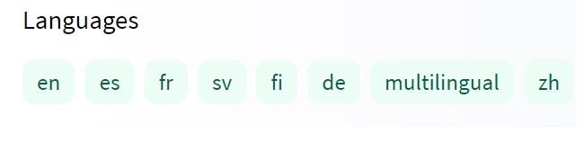

T4. Centralización de datasets y modelos: Huggingface
Contents
T4. Centralización de datasets y modelos: Huggingface#
Contenidos:
Tecnologías de Generción (Copilot, ChatGPT)
Introducción#
Huggingface.co una compañía centrada en el PLN la cual ha desarrollado las librerías Transformers, centralizado datasets y ha creado modelos de aprendizaje pre-entrenados disponibles a través de sus librerías de programación. Las librerías de Huggingface actualmente dan soporte a empresas muy importantes del mercado tecnológico. Ver https://huggingface.co/.
Repositorio de Datasets#
Proporciona conjuntos de datos para muchas tareas de PLN como clasificación de texto, respuesta a preguntas, modelado de lenguaje, etc.
Instalación de librería de manipulación de datasets
Para la instalación de la librería de manipulación de datasets se debe ejecutar la siguiente instrucción pip:
>>> pip install datasets
Para asegurarnos de que Transformers dataset se ha instalado correctamente es necesario ejecutar la siguiente instrucción:
>>> python -c "from datasets import load_dataset; print(load_dataset('squad', split='train')[0])"
Esta instrucción debe descargar la versión 1 del conjunto de datos de respuesta a preguntas de Stanford, cargar su división de entrenamiento e imprimir el primer ejemplo de entrenamiento de la siguiente manera:
{'id': '5733be284776f41900661182', 'title': 'University_of_Notre_Dame', 'context': 'Architecturally, the school has a Catholic character. Atop the Main Building\'s gold dome is a golden statue of the Virgin Mary. Immediately in front of the Main Building and facing it, is a copper statue of Christ with arms upraised with the legend "Venite Ad Me Omnes"...', 'question': 'To whom did the Virgin Mary allegedly appear in 1858 in Lourdes France?', 'answers': {'text': array(['Saint Bernadette Soubirous'], dtype=object), 'answer_start': array([515], dtype=int32)}}
Listar datasets disponibles en el repositorio#
Para listar los conjuntos de datos disponibles es necesario ejecutar la siguiente función datasets.list_datasets () que pertenece a la clase datasets.
>>> from datasets import list_datasets
>>> datasets_list = list_datasets()
>>> len(datasets_list)
656
>>> print(', '.join(dataset for dataset in datasets_list))
aeslc, ag_news, ai2_arc, allocine, anli, arcd, art, billsum, blended_skill_talk, blimp, blog_authorship_corpus, bookcorpus, boolq, break_data,
c4, cfq, civil_comments, cmrc2018, cnn_dailymail, coarse_discourse, com_qa, commonsense_qa, compguesswhat, coqa, cornell_movie_dialog, cos_e,
cosmos_qa, crime_and_punish, csv, definite_pronoun_resolution, discofuse, docred, drop, eli5, empathetic_dialogues, eraser_multi_rc, esnli,
event2Mind, fever, flores, fquad, gap, germeval_14, ghomasHudson/cqc, gigaword, glue, …
Otra alternativa es:
Ir a la web https://huggingface.co
Seleccionar el menú Datasets: https://huggingface.co/datasets
Filtrar por categoría, idioma, tarea y/o licencia
¿Cómo cargar datasets?#
Haciendo uso de la función load_dataset se nos permite recuperar cualquier dataset registrado en el repositorio. Por ejemplo, el dataset MRPC que ha sido proporcionado en el índice de referencia GLUE (https://gluebenchmark.com/leaderboard).
>>> from datasets import load_dataset
>>> dataset = load_dataset('glue', 'mrpc', split='train')
O podemos ver otro ejemplo como el de eHealth-KD
>>> from datasets import load_dataset
>>> dataset = load_dataset("ehealth_kd")
No obstante, la librería datasets permite además cargar conjuntos de datos propios que no formen parte del repositorio. Por ejemplo:
>>> from datasets import load_dataset
>>> dataset = load_dataset('csv', data_files='my_file.csv')
Para más detalles sobre las distintas funciones y parámetros permitidos para manipular datasets ver la siguiente documentación:
Categorías, tareas e idiomas de datasets#
9 Categorías:

Figura 1. Categorías filtro de datasets
Más de 134 tareas y más de 194 idiomas:

Figura 2. Tareas e idiomas filtro datasets
Repositorio de Modelos pre-entrenados#
La biblioteca de Transformers permite el uso de modelos previamente entrenados para tareas de Comprensión del lenguaje natural (NLU), i.e. como analizar el sentimiento de un texto, y Generación del lenguaje natural (NLG), i.e. como completar un mensaje con texto nuevo o traducir a otro idioma. A groso modo listamos los modelos que nos podemos encontrar
Análisis de sentimiento: Conocer si un texto es positivo o negativo
Generación de texto (en inglés): proporcionar un mensaje para el cual el modelo generará un texto.
Reconocimiento de entidades nombradas (NER): Dado en una oración de entrada se etiqueta cada palabra con la entidad que esta representa (persona, lugar, organización, etc.)
Respuesta a preguntas: Teniendo en cuenta un modelo de un contexto determinado, dado un pregunta se obtiene una respuesta.
Relleno de texto con máscara: Dado un texto con palabras enmascaradas (p. Ej., Reemplazado por [MÁSCARA]), completar los espacios en blanco.
Resumen: Generación de un resumen a partir de texto extenso.
Traducción: Traducción de un texto a otro idioma.
Extracción de características: Obtener una representación tensorial del texto. Tomado de https://huggingface.co/transformers/quicktour.html
Listado de tareas tal y como las podemos encontrar en el repositorio:

Figura 3. Tareas filtro modelos
Idiomas para los que se han entrenado los modelos:
{kind=link}
Figura 4. Idiomas filtro modelos
Una explicación detallada sobre cada una de estas tareas y ejemplos de uso con Huggingface Transformer la podemos encontrar en el siguiente enlace:
Ejemplo de Análisis de Sentimientos con Huggingface Transformer:
>>> from transformers import pipeline
>>> classifier = pipeline('sentiment-analysis')
>>> classifier('We are very happy to show you the 🤗 Transformers library.')
[{'label': 'POSITIVE', 'score': 0.9997795224189758}]
Si os fijáis hemos cargado un modelo pre-entrenado a través del pipeline sentiment-analysis para utilizarlo como clasificador. Este modelo se puede reentrenar a escenarios específicos si queremos realizando un ajuste sobre un nuevo corpus. Para más detalles ver la clase práctica bloque3_p3_SA-Transformers-Training-FineTuning
Si queremos que el pipeline sea multilingue, podemos indicar el modelo exacto que contemple un diccionario de este tipo y el pipeline lo ensamblará internamente. Mirad el siguiente ejemplo:
>>> from transformers import pipeline
>>> classifier = pipeline('sentiment-analysis', model='nlptown/bert-base-multilingual-uncased-sentiment' )
>>> classifier('Estoy muy triste')
[{'label': '1 star', 'score': 0.7241697907447815}]
Para otras tareas como Rellenado de Máscaras podemos ver como podemos simplemente indicar el tipo de tarea para que el pipeline seleccione el tipo de configuración más adecuada a esta y el modelo que queremos aplicarle. Con solo cambiar el modelo base podemos hacer esta tarea unilingue a multilingue o cambiar de idioma. Ver el ejemplo a continuación:
>>> from transformers import AutoModelWithLMHead, AutoTokenizer
>>> model = AutoModelWithLMHead.from_pretrained('mrm8488/RuPERTa-base')
>>> tokenizer = AutoTokenizer.from_pretrained("mrm8488/RuPERTa-base", do_lower_case=True)
>>> from transformers import pipeline
>>> pipeline_fill_mask = pipeline("fill-mask", model=model, tokenizer=tokenizer)
>>> pipeline_fill_mask("España es un país muy <mask> en la UE")
[{'score': 0.19951821863651276,
'sequence': 'España es un país muy importante en la UE',
'token': 1560,
'token_str': ' importante'},
{'score': 0.04137842729687691,
'sequence': 'España es un país muy grande en la UE',
'token': 2741,
'token_str': ' grande'},
{'score': 0.029216745868325233,
'sequence': 'España es un país muy pequeño en la UE',
'token': 2948,
'token_str': ' pequeño'},
{'score': 0.02563760057091713,
'sequence': 'España es un país muy popular en la UE',
'token': 5782,
'token_str': ' popular'},
{'score': 0.022264542058110237,
'sequence': 'España es un país muy antiguo en la UE',
'token': 5240,
'token_str': ' antiguo'}]
Listado de Pipelines#
En Huggingface podemos encontrar una serie de Pipelines ya preparados para enfrentar tareas concretas a los cuales les podemos suministrar distintos modelos y tokenizadores transformes. Ver ejemplos: https://huggingface.co/transformers/main_classes/pipelines.html
¿Cómo buscar y reutilizar modelos pre-entrenados en la plataforma?#
A continuación, se listan los pasos a seguir:
Dirigirse al repositorio https://huggingface.co/
Seleccionar el menú
modelsque nos llevará a https://huggingface.co/modelsFiltrar el listado de modelos según la tarea, idioma, librería (Pytorch o TensorFlow), dataset sobre el que fue entrenado, o licencia. Por ejemplo: tarea
Text Classification; idiomaes.Elegir un modelo de la lista. Por ejemplo:
bert-base-multilingual-uncased-sentimentObtendremos la documentación necesaria para utilizar el modelo.
Conociendo el nombre del modelo a utilizar entonces podemos hacer uso de este a través de la librería Transformer. En la propia documentación se aporta el código de ejemplo para hacer uso del modelo y en algunos casos una interfaz para probarlo:
from transformers import AutoTokenizer, AutoModelForSequenceClassification
tokenizer = AutoTokenizer.from_pretrained("nlptown/bert-base-multilingual-uncased-sentiment") # cargando el toquenizador basado en el modelo preentrenado
model = AutoModelForSequenceClassification.from_pretrained("nlptown/bert-base-multilingual-uncased-sentiment") # cargando del modelo preentrenado
Configuraciones de modelos trasnformers#
Los modelos pre-entrenados que se brindan en el repositorio se basan en alguna de las arquitecturas Transformers descrita en la documentación del repositorio (https://huggingface.co/docs). Si tomamos como referencia la arquitectura de modelo Transformer DistilBERT podemos conocer cómo gestionar los distintos parámetros, configuraciones de red neuronal, tokenizador y ejemplos para cada tipo de tarea.
>>> # !pip install transformers
>>> from transformers import DistilBertTokenizer, DistilBertModel
>>> import torch
>>> tokenizer = DistilBertTokenizer.from_pretrained('distilbert-base-uncased') # cargando de toquenizador basado en el modelo preentrenado
>>> model = DistilBertModel.from_pretrained('distilbert-base-uncased') # cargando el modelo preentrenado
>>> inputs = tokenizer("Hello, my dog is cute", return_tensors="pt")
>>> outputs = model(**inputs)
>>> last_hidden_states = outputs.last_hidden_state
>>> print(last_hidden_states)
tensor([[[-1.8296e-01, -7.4054e-02, 5.0267e-02, ..., -1.1261e-01,
4.4493e-01, 4.0941e-01],
[ 7.0631e-04, 1.4825e-01, 3.4328e-01, ..., -8.6039e-02,
6.9475e-01, 4.3353e-02],
[-5.0721e-01, 5.3086e-01, 3.7163e-01, ..., -5.6287e-01,
1.3756e-01, 2.8475e-01],
...,
[-4.2251e-01, 5.7314e-02, 2.4338e-01, ..., -1.5223e-01,
2.4462e-01, 6.4155e-01],
[-4.9384e-01, -1.8895e-01, 1.2641e-01, ..., 6.3241e-02,
3.6913e-01, -5.8252e-02],
[ 8.3269e-01, 2.4948e-01, -4.5440e-01, ..., 1.1998e-01,
-3.9257e-01, -2.7785e-01]]], grad_fn=<NativeLayerNormBackward>)
Es importante conocer que las configuraciones de modelos Transformer ya cuentan con modelos base pre-entrenados. En el caso de DistilBERT podemos encontrar distilbert-base-uncased.